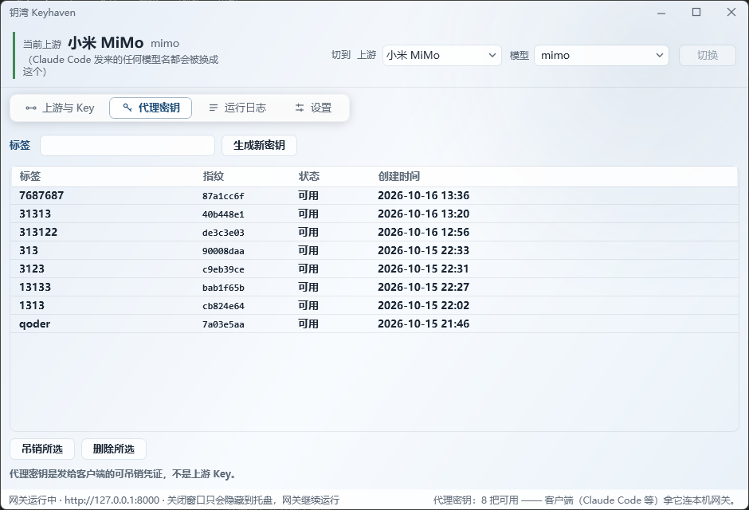

一个本地网关，替你把 Key 挡在后面
Claude Code 以为自己还在跟 Anthropic 说话，其实中间隔着一道开在本机的门。门外只有一把能随时作废的代理密钥，门里才是真 Key。
ANTHROPIC_BASE_URLhttp://127.0.0.1:8000
只沿这一条边离开进程
出站分两条路
| 上游类型 | 网关行为 | 具体做了什么 |
|---|---|---|
| Anthropic 兼容 Anthropic、DeepSeek /anthropic |
直通 | 只改 model 字段，其余原样携带：thinking、工具调用、图片、流式、中止传播；请求头走白名单。 |
| OpenAI 兼容 DeepSeek、MiMo 等 API 根 |
翻译 | Anthropic messages ↔ chat/completions：文本、图片、tool_use/tool_result、tools、stop_sequences 都译；流式按块索引严格配对，usage 从末尾分片合成；thinking 丢弃，count_tokens 直答 404。 |
单点解密，只沿一条边离开进程
这些不是可选项，是刻意设计。改任何一条都要先说明代价——仓库里十一条护栏记着为什么。
真 Key 存 DPAPI 密文，落在本机 config.json；跟 Windows 用户绑定，覆盖程序换版本也照样解得开。
只在一处解密：注入器是挂在 HttpClient 管道上的 DelegatingHandler，组合根之外无人可调用。
发完即删，上游零日志；上游客户端不跟随重定向，本机的 HTTP_PROXY 也影响不到它。
代理密钥只存 SHA-256，不可回显；鉴权只做一次定值比较，不落计数、不做退避与锁定。
只监听 127.0.0.1，地址写死、只有端口可改。挡的是本机网页与其他程序，不是公网。
吊销即刻生效：作废一把密钥，客户端下一次请求就是 401。
运行日志只在内存（500 行环形缓冲），一行一请求，只记时间、指纹、上游、模型、状态与首字节。
唯一一处非上游外呼：启动后匿名查一次 GitHub Releases 看有没有新版，零请求体、不带本地信息，断网一律静默。
最小 UI，够用就好
四个页面，一个托盘。不摆仪表盘，不堆开关——要做的决定就那么几个。
状态脊 + 一键切换
顶部一条脊写着「当前跑在谁上面」，右侧选上游与模型，一键切换生效。
上游与 Key
厂家预设一键填好类型与地址（只预填核实过的，其余明标）；Key 存进后输入框立即清空，界面里再也看不到它。
只读诊断
「测试连接」「拉取模型」只看不改：报出可达状态与往返耗时，拉取到的模型名直接填进模型框。
代理密钥
签发给客户端的可吊销凭据，不是上游 Key。带标签、显指纹、可即刻吊销；配置片段只显示一次。
运行日志
一行一请求：时间、密钥指纹、上游、模型、状态、首字节耗时、结束原因。不记请求内容，不落盘。
托盘常驻
关窗只是收进托盘，网关继续跑；同一时刻只允许一个实例，放两份副本没意义。
长这样
Windows 原生 WPF 窗口，跟着系统深浅色走。下面是实机截图。

图片存放于 assets/shots/，换图覆盖同名文件即可。
三步装好
当前版本 1.0.1，压缩包约 0.53 MB，解压后 9 个文件 / 约 0.8 MB。
下载并解压
拿到 keyhaven-1.0.1-win-x64.zip，解压到任意目录。依赖框架的产物要整包放在一起——只拿走 exe 是起不来的。
装 .NET 8 运行时
目标机需 .NET 8 的 Desktop 运行时 + ASP.NET Core 运行时，一次装好，之后换版本不用再装。
双击 AiGateway.App.exe
托盘出现图标，网关跑在 127.0.0.1:8000。在窗口里配一次上游与代理密钥，把配置片段合并进 Claude Code。
AiGateway.App.exe 的快捷方式丢进 shell:startup 即可。配置与密钥在 %LOCALAPPDATA%\AiGateway\config.json，不跟程序目录走，换版本不动它们；卸载时删掉程序目录再删这个文件夹，就彻底清干净了。
刚开始，但已经在改
-
v1.0.1 首个带更新检查的版本（只提示、不自更）。
- 启动后匿名查一次 GitHub Releases，有新版在设置页亮提示，点了去下载页手动下；托盘菜单新增「检查更新」，新版 / 已最新 / 失败都有回话。
- 这是唯一一处非上游外呼：匿名 GET、零请求体、只带 GitHub API 强制的 User-Agent。
docs/install.md补上更新三步：托盘退出 → 覆盖 9 个文件 → 重开。
-
v1.0.0 第一个发布版。
- 状态脊 UI、上游一键预设、只读诊断（测试连接 / 拉取模型）。
- Anthropic 协议直通，OpenAI 协议翻译（流式、工具调用、中止传播）。
- 代理密钥签发 / 指纹 / 即刻吊销；只监听 127.0.0.1。
- 运行日志一行一请求，只拉取；托盘常驻。
真 Key 只留本机
发出去的，只是一把随时能作废的钥匙
钥湾 Keyhaven · 开源免费（MIT） · 回到安装步骤